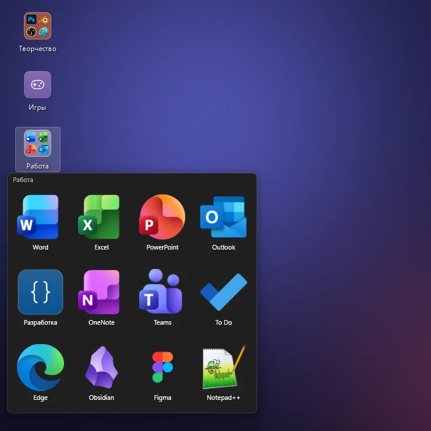
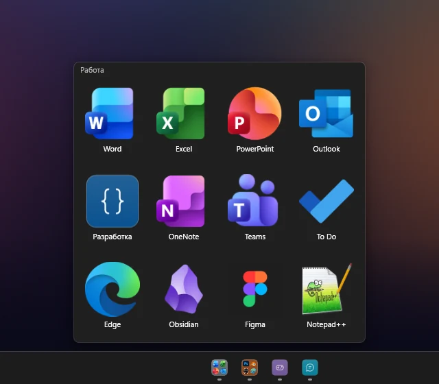
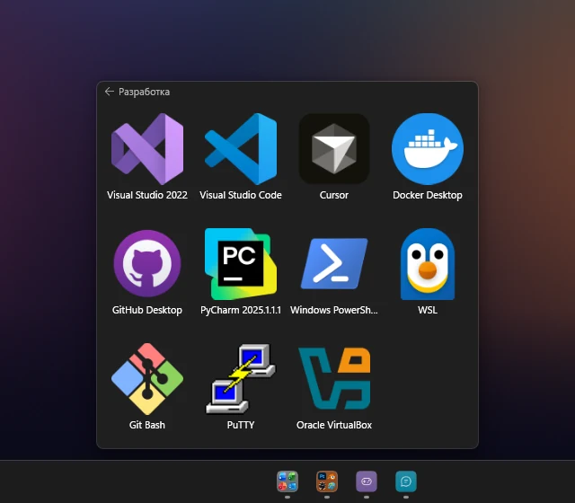
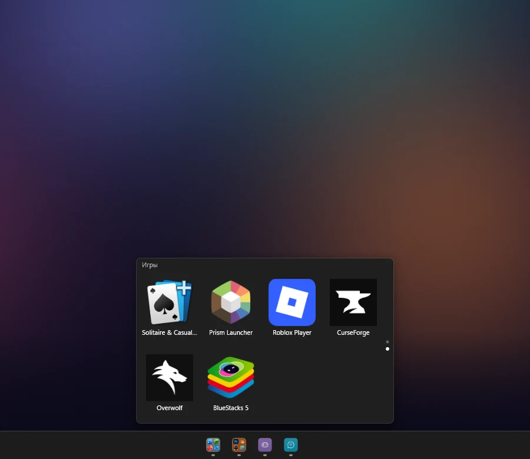
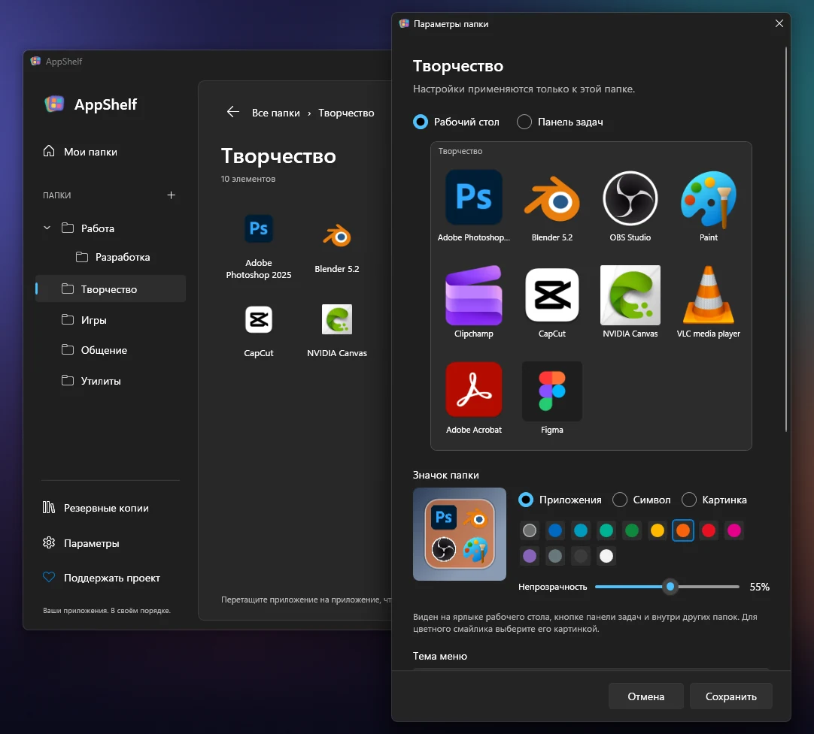
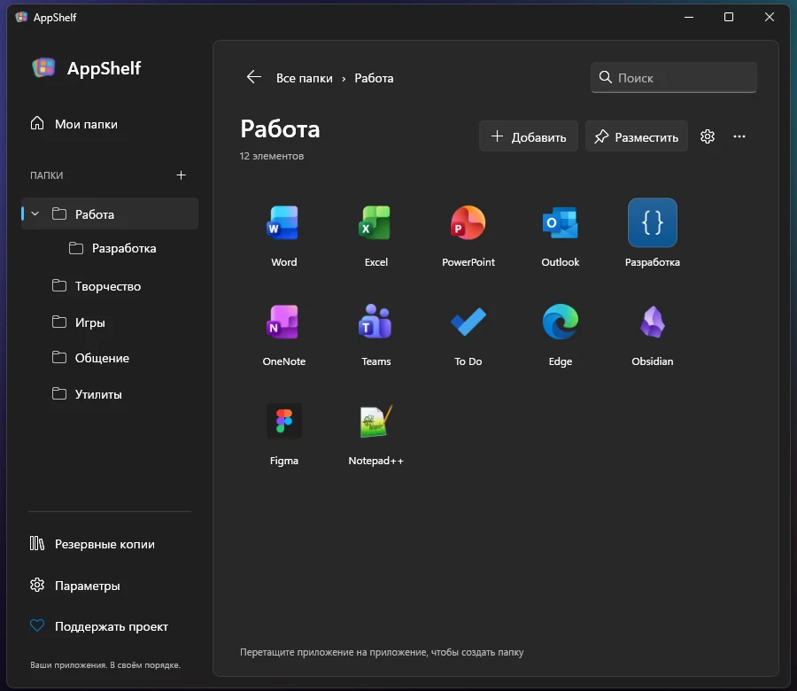

Приложения по папкам
Папки с приложениями прямо на рабочем столе. Первый щелчок открывает меню, второй запускает приложение.

AppShelf раскладывает приложения по папкам, которые открываются с панели задач или рабочего стола. Меню остаётся маленьким: название, значки приложений и вложенные папки.
Windows 11 x64 · Русский и английский · Открытый код под лицензией MIT
Всё остальное — в редакторе, аккуратном окне в стиле Windows 11, где вы собираете свои папки.
Папки с приложениями прямо на рабочем столе. Первый щелчок открывает меню, второй запускает приложение.

У каждой папки своя кнопка рядом с другими приложениями, с превью содержимого и кнопками быстрого запуска.

Держите инструменты вместе. Назад ведут название папки, Backspace и Alt+←.

Задайте число строк и столбцов. Если приложений больше, листайте страницы колесом мыши, клавишами Page Up и Page Down или точками сбоку, как в меню «Пуск».

Значки её приложений, символ или своя картинка на подложке любого цвета и прозрачности. Светлое или тёмное меню и размер значков от 50 до 200 % — отдельно для рабочего стола и панели задач.

Перетаскивайте приложения, сортируйте их и вкладывайте папки друг в друга в редакторе, который выглядит как часть Windows 11.

Кнопки на панели задач и открытие папок на рабочем столе одним щелчком работают, пока AppShelf запущен. Запуск вместе с Windows включается одним переключателем в параметрах.
Это собственные кнопки AppShelf, а не закрепления Проводника. Меню «Пуск» остаётся как было.
AppShelf хранит копии добавленных ярлыков: уборка рабочего стола не ломает папки, а приложения, переехавшие после обновления, находятся заново.
Ни аккаунтов, ни аналитики, ни рекламы. Всё хранится на вашем компьютере.
Политика конфиденциальностиClaude или другой MCP-клиент разложит приложения по папкам, и любое изменение можно отменить. Чат-бота внутри AppShelf нет.
Подключение MCP (на английском)AppShelf сообщает, когда выходит новая версия. Версия из Microsoft Store обновляется через Store.
Нужна Windows 11 x64.